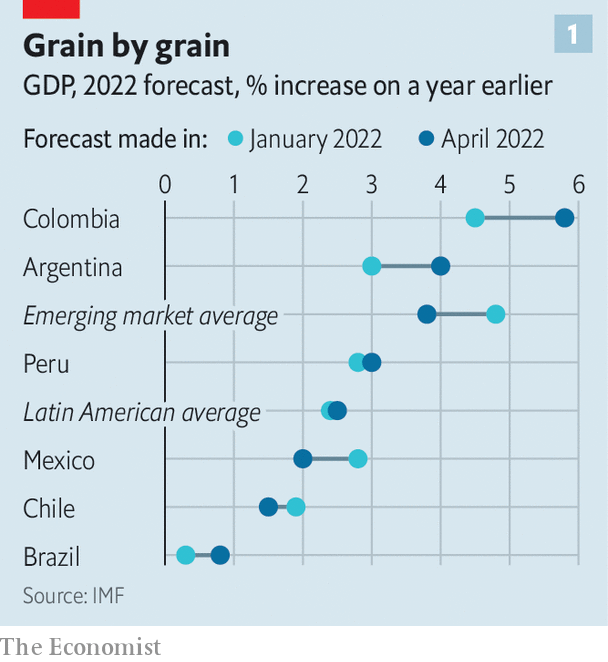
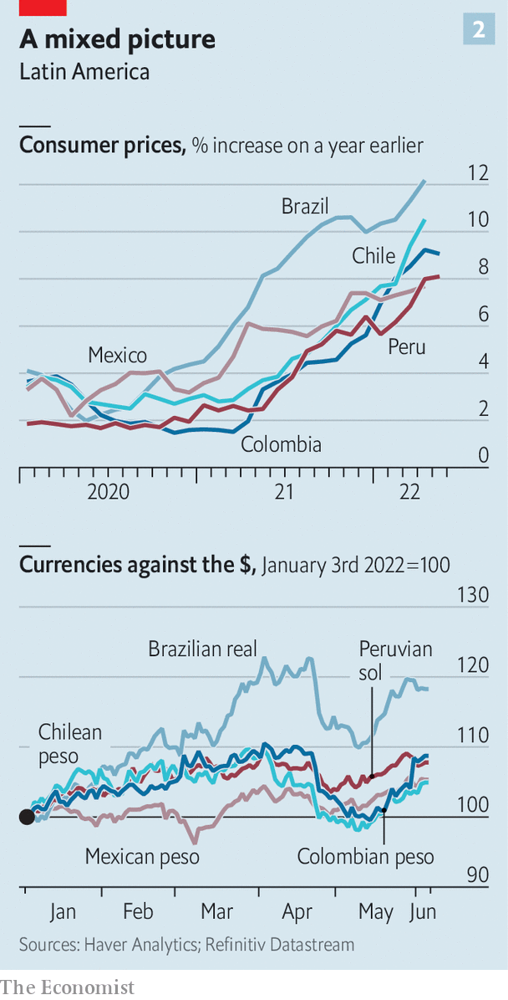

Some Latin American economies have benefited from the war in Ukraine
But the effects are unlikely to last
When russia invaded Ukraine in February, it was not just Ukrainians who suffered. The prices of wheat, oil and other commodities that both countries produce in large quantities rocketed, inflicting serious pain on cash-strapped countries that rely on imports. Some world leaders, however, saw the bright side. “This crisis is a good opportunity for us,” said Jair Bolsonaro, Brazil’s president, in March. Similarly last month Alberto Fernández, the president of Argentina, said that his country is “a reservoir of what the world needs right now: food and energy”.
Latin America’s economies are indeed weathering the war better than many other emerging markets’. But household budgets across the region are being battered by war-induced inflation. This shock comes on top of several recent misfortunes. And in the medium term, the outlook for some Latin American economies is stormy.
Even before the war, 2022 promised to bring plenty of discomfort to the emerging world. As the year began, output remained short of pre-pandemic trends across many economies, and debt loads stood substantially higher. Supply-chain problems and rising prices throttled household consumption, while rising interest rates in rich countries pulled capital away from poor ones, increasing the financial pressure on firms and governments already straining to make ends meet.
Wheat lifters
Latin America seemed to be among the most troubled places. In January the imf projected that its growth in 2022 would be the lowest of any region in the world. Inflation surged in Argentina and Brazil. In its most recent forecast the imf downgraded its projections for economic growth in rich countries this year by 0.6 percentage points, and that for emerging economies by a whole percentage point.

Against this background, Latin America has done rather well in the past three months or so. Wheat and oil prices have risen by more than 20% since the war began. That is good news for Argentina, the third-largest exporter of wheat in the Americas after the United States and Canada. High oil and gas prices are also providing a shot in the arm to exporters of hydrocarbons, such as Brazil and Colombia. Although prospects have dimmed for most countries, the imf has revised up its growth forecasts this year for Argentina, Brazil, Peru and Colombia (see chart 1).

Elsewhere in the emerging world, the soaring cost of food and energy threatens to turn a difficult macroeconomic situation into a horrendous one. In Sri Lanka the drain on hard-currency reserves caused by the rising price of oil imports forced the government to default on its external debt in April. Across much of Latin America, in contrast, foreign purchases of pricey commodities have provided a steady inflow of hard currency, enabling people and companies there to buy imports on good terms. Many of the region’s currencies have gained value against the dollar, in contrast to much of the rest of the emerging world (see chart 2).
That has provided politicians with some room to try to protect voters from the pain of high food and energy prices—a luxury many other countries cannot afford. Pakistan’s government, for instance, is cutting fuel subsidies in a desperate bid to avoid a fate similar to Sri Lanka’s. But in Mexico the jump in money earned from oil exports reduces the pressure to enact such painful measures. The governments of Colombia and Chile are maintaining subsidies, while in Peru the government has reduced the consumption tax on food and energy. Across Latin America, politicians have taken measures worth about 0.3% of gdp, on average, to try to shield households from the effects of the war.
Not all is rosy. Even after its upward revisions, the imf expects Latin America to grow more slowly this year than any other part of the emerging world, apart from eastern Europe. Brazil will probably struggle to grow by more than 1% this year, despite high commodity prices. Costly food and energy, though helpful to exporters, are fanning inflation. Consumer prices are rising at double-digit rates in Chile and Brazil, and are well above central-bank targets in Latin America’s other large economies. Central bankers have put up interest rates to prevent surging prices from translating into a broader loss of confidence in governments’ control over inflation—a meaningful risk in a region with a history of spiralling prices. But higher rates also squeeze investment and growth.
Conditions may deteriorate further if inflation in rich economies proves more persistent than expected, forcing central banks to raise rates by more than markets anticipate. In the 1980s, when the United States last battled to subdue serious inflation, the consequences for Latin America were grim: a wave of debt crises and an economic lost decade. Macroeconomic policy across the Americas has improved a lot since then. But the combined pressure of multiple shocks today has left some economies vulnerable.
The region cannot afford another crisis. Latin America suffered a larger decline in gdp in 2020 than any other part of the world. The pandemic resulted in forgone investment, missed hours of schooling and weaker productivity growth. This is likely to depress economic growth in the years ahead; indeed, the imf reckons that in 2024 output across Latin America will probably remain about 5% short of the pre-pandemic trend. Recent hardships have fallen hardest on the poor.
In countries plagued by extreme inequality, such unevenly distributed costs could aggravate political instability or extremism. Elections in Colombia this month and in Brazil in October seem certain to yield winners who are poorly equipped to meet the challenges of the moment. And if governments remain unable to deliver relief to struggling Latin Americans—a tall order given global headwinds, high commodity prices or not—then frustration across the region will only grow. ■